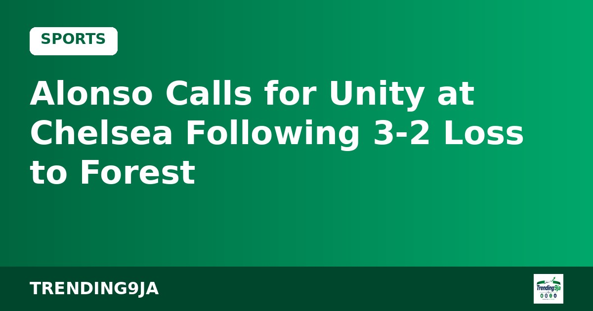

Emmanuel Emegha: Chelsea's In-Form Forward With Nigerian Heritage
Chelsea forward Emmanuel Emegha continues to turn heads in the Premier League as details emerge about the striker's Nigerian family roots.

Chelsea manager Xabi Alonso has urged his squad to stay united following their 3-2 defeat against Nottingham Forest on Friday, according to Punch. The setback at the City Ground represents the London club's third consecutive defeat in the Premier League.
The home side established an early advantage when Igor Jesus scored, putting Chelsea on the back foot. Despite a second-half effort featuring two goals from Emmanuel Emegha, Chelsea failed to secure a point after conceding three goals during the match.
According to Punch, Alonso was seen consoling Pedro Neto after the final whistle. In a post-match interview featured on Chelsea's official website, the manager admitted that his players are currently battling low confidence and finding it difficult to maintain control of match results.
Alonso pointed out that conceding a third goal almost immediately after reducing the deficit to 2-1 ruined the momentum his team had gained. He accepted responsibility on behalf of the squad, stating that everyone involved must work to address their current form and defensive issues.
Emphasising the need for togetherness in the dressing room, the manager warned that division would only make their situation more complicated. He called on players, staff, and supporters to support one another and push through what he described as a storm.
Alonso concluded that the team cannot afford to stop fighting and must stay critical of their performances while actively searching for solutions to improve their results.
Sources: Punch
← More Sports stories
Chelsea forward Emmanuel Emegha continues to turn heads in the Premier League as details emerge about the striker's Nigerian family roots.

Mauricio Pochettino endured a heavy 4-0 defeat to Liverpool in his first game as Manchester United manager following an early red card for Leny Yoro.

Manchester United have conceded 34 goals this season following a 4-0 defeat to Liverpool, marking the worst defensive tally in Europe's top five leagues.
Nigeria's trending news, politics and entertainment, straight to your email.
By subscribing you agree to our Privacy Policy. Unsubscribe any time.